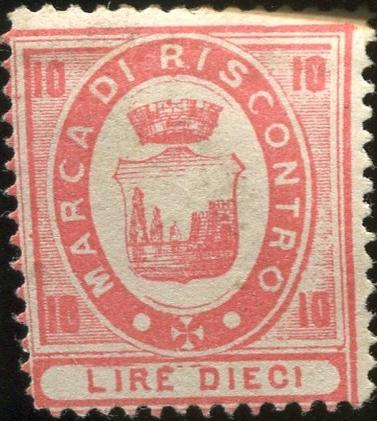
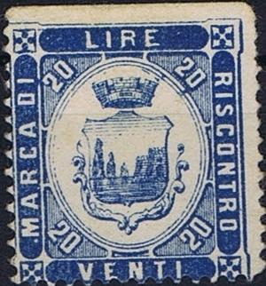
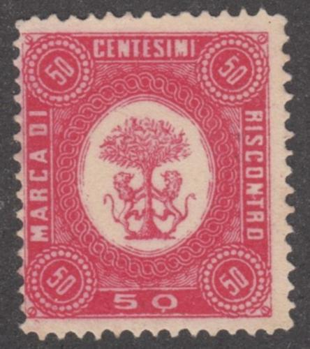
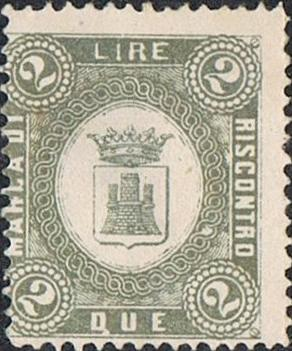
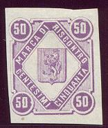
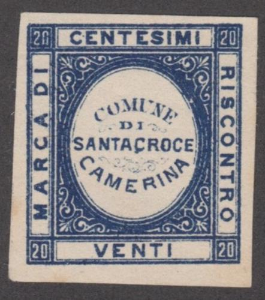
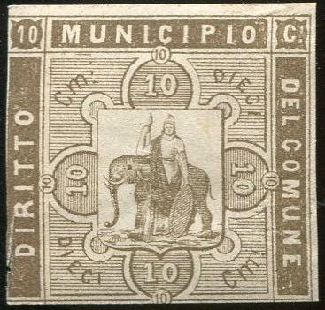
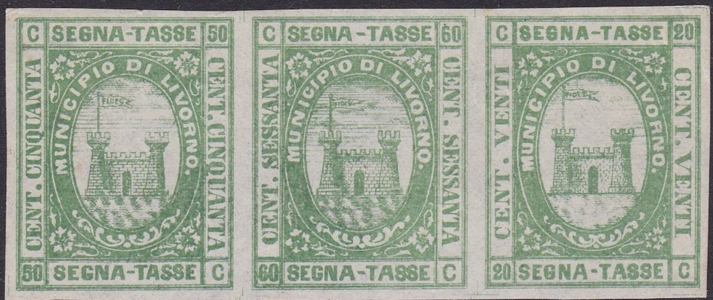

{kind=link}

{kind=link}



Acireale, note the 3 L in two types, without and with elllipse around the arms.
Return To Catalogue - Italy fiscal stamps, municipal stamps, part 2 - Italy fiscal stamps, municipal stamps, part 3, stamps that were actually used - Italy overview
Note: on my website many of the
pictures can not be seen! They are of course present in the
catalogue;
contact me if you want to purchase the catalogue.
There are many local fiscal stamps of Italy, even the famous
Forbin catalogue does not list them, but mentions that in 1915
there were already 7000 to 8000 different local fiscal stamps in
Italy. A book seems to exist on this subject (I haven't seen it
myself): 'Italian Municipals' by J.B. Moens (1892), it has been
reprinted by Barata in 1994 (80 pages). see also
http://www.italianmunicipalstamps.alexkemura.co.uk/
Apparently, the printers Smorti and Pineider from Florence
printed large amounts of these stamps with no townname but blank
center (in which they could later insert arms or other imagery)
which they tried to sell to towns and villages, most of these
stamps were later sold for collector's purposes only. According
to Gerhard Lang, the Smorti-project was actually driven by Usigli
and de Torres (with Bonasi as well being involved?), he says 40
cities were targeted (while Diena states only 18).
I'll give some examples here only:
1877 Most likely Smorti and Pineider products (somewhere late 1870' early 1880's?), 4 to 6 different types. Some of them appear in 'L'Ami des Timbres' by Ch. Roussin of 20 Juin 1877. Some examples:
 
Acireale, note the 3 L in two types, without and with elllipse
around the arms.



Bitonto


Caltanissetta


Castelfranco di Sopra, standing lion with feather
Castellammare del Golfo (image of a tower with an eagle)
Castelnuovo Berardenga; sorry no image available yet.


Catanzaro

Comiso, "COMUNE DI COMISO" in the center

Cortona, lion holding a book, genuinely used?
Fabriano? sorry no image available yet.


Firenze (Florence)
Lastra a Signa; 20 c only in various colors. Design: two bent bars. Sorry no image available yet.


Mistretta, proof and stamp genuinely(?) used in 1878.
Monreale, star and crown, sorry, no image available yet.
Montemaggiore Belsito, arms with crown and wheat, sorry no image available yet.
Montesarchio, arms with person, sorry no image available yet.


Montescudaio

Pistoia, arms with checker symbol, also arms with crown; sorry no
image available yet.
Pontedera, sorry no image available yet


Porta San Marco
Porto Empedocle, only a 20 c blue and 50 c violet?
San Felice a Cancello; a design very similar to the bogus issues,
yet only the 20 c blue and 60 c blue in this design are known.
San Giovanni Valdarno, man standing in shield; sorry no image available.


Santacroce Camerina; the elliptic 50 cdesign also exists for
Montescudaio and Porto San-Marco


Sinalunga
Sora
Termini Imerese


Terracina, I've also seen 10 c brown and 50 c brown.

Viareggio, arms with anchor, 10 c exists in various colors.


Villarosa: "MARCA DI RISCONTRO COMUNE di VILLAROSA"


Three crowns and Star and Moon design. Not sure from which towns
these are.
A 20 c blue for the town of Pelago (with townname) was clearly inspired by one of the above designs.

Catania bogus revenues (the bottom part of the 10 c stamp has
been cut off). According to Gerhard Lang, this is a bogus issue
made by Torres. The following values
were issued: 5 c green, 10 c brown, 20 c orange, 25 c yellow, 50
c lilac, 1 L black, 5 L blue.

Forgeries of Livorno with a long flagpole, likely made by Torres as well. They exists in various
colors and values. Also a genuine 20 c (with short flagpole).
Italy fiscal stamps,
municipal stamps, part 2
Italy fiscal stamps, municipal stamps,
part 3, stamps that were actually used
Literature: J.B.Moens, Italian municipals, 1892.
Stamps - Francobolli - Briefmarken - Timbres-Poste
{kind=link}
{kind=link}
{kind=link}
{kind=link}
{kind=link}